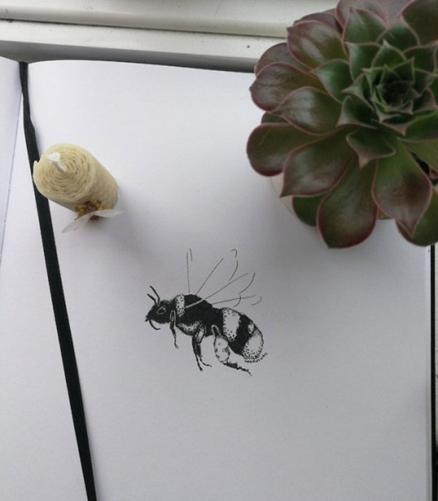

Recent Projects

Illiustrating a Book
Trough my photography endevours I managed to fall for these hard working creatures. That polinateour fields and are responsible for a lot of our fruit and vegetables that we are so used to. Being such important component in our ecosystem.
I began to watch and illiustrate these delicate creatures in their daily work. And collecting drawings to put together into a little bumblebee fact book with illiustrations to follow.
At the same time introducing bumblebees and theyr lovely nature to people around us.
Drawings



Photography